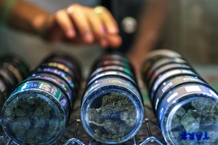

Along Bangkok’s famous backpacker strip, Khao San Rd, storefronts offer a smorgasbord of highs – cannabis strains promising relaxation, mood enhancement, and energetic or giggly vibes.
Since Thailand legalised cannabis three years ago thousands of such stores have opened across the country, their doorways often topped with bright neon marijuana-leaf signs.
But new government rules imposed in June that re-criminalsed cannabis for recreational use have plunged Thailand’s $1bn cannabis industry into a state of confusion, with shops scrambling to comply with the requirements, and many fearing they will be forced to close.
The new rules make it mandatory for any retail cannabis purchase to require a prescription from a medical professional.
The details of how the new rules will work in practice, and the guidelines for issuing prescriptions, are still being finalised. Recent reports suggest shops may have to register with the government as clinics.
For entrepreneur Natthakan Punyathanaworakit, the announcement was the final straw. She closed one of her three cannabis shops in Bangkok after the change was announced, saying business had already been tough.
“Most of the registered shops will shut down,” she says, adding that many instead would likely go underground.
A staff member at a cannabis shop called “Green House Thailand” arranges cannabis inside his shop on Khaosan Road.Photograph: Napat Wesshasartar/Reuters
The push to impose new controls comes after the Bhumjaithai Party, which championed its legalisation, withdrew from the ruling coalition after Thai prime minister Paetongtarn Shinawatra’s perceived poor handling of a border row with Cambodia .
Health minister Somsak Thepsutin said the reforms are aimed at improving public safety and protecting young people and children.
Cannabis shop owners, however, say the issue has become politicised and that changes will unfairly push out smaller businesses that cannot afford to hire a medical professional.
Decriminalisation marked a major policy reversal in Thailand, a country long known for its tough stance on drugs, but it has been fraught from the outset. The change paved the way for thousands of people convicted of cannabis-related offences to be released from jail, while politicians promised it also would create new economic opportunities.
The legalisation was widely criticised for being rushed through without proper safeguards. Piecemeal rules were passed after decriminalisation – for example, banning cannabis from schools, as well as the sale of marijuana to under 20s and pregnant women.
The explosion in dispensaries has also created public unease, while a growing problem of cannabis smuggling has generated negative headlines. Earlier this year, two young British women were arrested in Georgia and Sri Lanka after flying from Bangkok carrying large amounts of marijuana. Both are facing lengthy prison sentences.
But cannabis entrepreneur Chokwan Chopaka, fears the new regulations won’t improve safety standards. Even past rules weren’t properly enforced, she says. “When there’s no enforcement there’s just no way I can compete.”
For small businesses that want to follow regulations, the latest rules are simply too costly, says Chokwan, who agrees many cannabis shops could shut down.
“It’s the little guys – the mom and pop [shops] … family business where the wife is helping trimming while the husband is growing – they’re the ones that will suffer,” she says.
People walk past a cannabis dispensary in Bangkok.Photograph: Lillian Suwanrumpha/AFP/Getty Images
At Khao San road, shops say fewer customers are coming through the doors after the new regulations were announced. “It’s going to affect [profits] because the tourists, they’re scared,” says Thammarat Siritanaratanakul, who works at store called, iStoned.
Oler SilaSilarat 28, who works at Hygge Flower, says he understands the reasons for reforms, but fears for small farmers who have invested in growing the plant and will also be required to obtain new certificates. “They have a lot of knowledge, but they cannot grow any more because they cannot compete with the big companies.”
After legalisation everyone had the opportunity to try to make money. “You can [open] the shop, you can make a career,” he says, “And then they change it.”
Natthakan says she will try to keep her two remaining shops open, but adds: “If one of the shops cannot keep up with the new rules, I will have to close.”